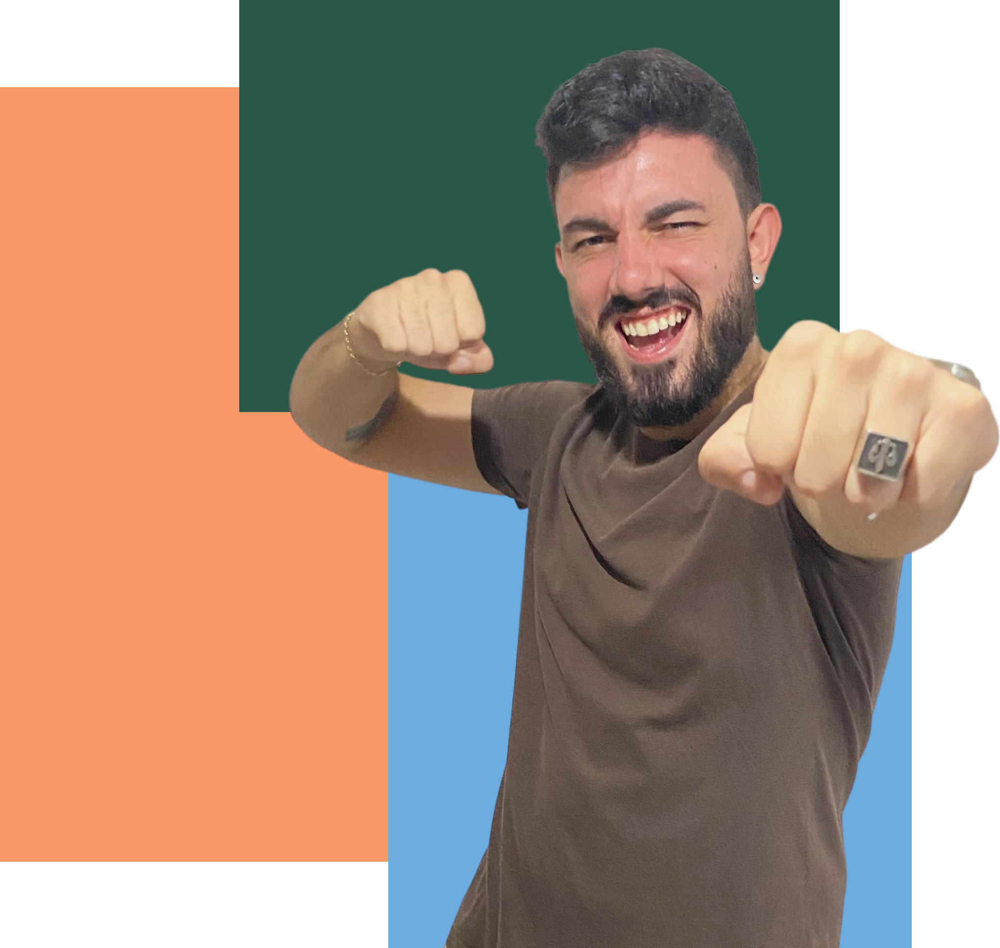

Please, select the language
GABRIEL
GODOY
Amo criar e desenvolver belas aplicações e jogos!
front-end developer
HTML - CSS - JavaScript
Quem sou
Quem sou
Sou Desenvolvedor Front-end, focado no desenvolvimento Web utilizando as linguagens HTML5, CSS3, JavaScript como também as ferramentas Photoshop, Canva e Figma para edição de imagens.
Crio soluções de pronta aplicação no mercado, com foco na usabilidade, layout moderno, além de código limpo e eficiente. Responsividade e projetos com consumo de API são alguns exemplos que podem ser vistos no meu portfólio.
Sou criativo, tenho facilidade e gosto pelo aprendizado, sou pró-ativo e hábil para trabalho em equipe, sou fluente na língua inglesa e estou disponível para viagens e mudança de domicílio.
Além da paixão por resolver desafios, minha experiência prévia como Professor, minha curiosidade, sentido de urgência e disciplina, me permitem ser para o mercado um profissional disposto a aprender com novas barreiras, e nunca deixar de procurar melhores soluções.
PORTFÓLIO
Só Bauru - Conversor de Arquivos
Automação e eficiência! Com o apoio do Lucas Bertolini desenvolvemos uma aplicação para a emissão dos flyers de resultados semanais. Consiste na conversão dos arquivos .XML, para o flyer finalizado em PNG/JPEG. Com essa aplicação, nosso cliente alem de economizar tempo e dinheiro, está agora protegido contra erros de digitação e padronização.

Cardápio Digital
Quer fazer seu pedido?! Com foco no mercado de bares e restaurantes, desenvolvi este cardápipo virtual que, por seu layout dinâmico e elegante, além de entregar uma excelente experiência ao usuário, trás efetividade e vendas mais acertivas para o estabelecimento.

MSN - Messenger
Como seria se o MSN voltasse? Em parceria com Guilherme Feitosa desenvolvi uma releitura do 'MSN - Messenger', utilizando HTML, CSS e JavaScript, onde você pode conversar em tempo real com outros usuários cadastrados.

Ukraine Soldier
Que tal apoiar a Ucrânia? Desenvolvi esse jogo de plataforma 2D 'free-to-play', baseado no clássico 'Mario 2D', onde você é um soldado Ucraniano que precisa eliminar os soldados Russos. Ao finalizar, você receberá um resumo sobre a situação atual da Ucrânia e informações de como pode ajudar os refugiados, como acesso à doações oficiais.

Jogo da digitação
Você é rápido digitando? Este é um jogo Web, desenvolvido para desktop, utilizando JavaScript para me desafiar utilizando loops, DOM e localStorage.

rovani's weed game
Você consegue ajudar o Rovani a pegar a erva? Este é um jogo baseado em Atari que desenvolvi usando a biblioteca em tela em JavaScript como presente de aniversário para um amigo querido.
Bora trabalhar junto?!